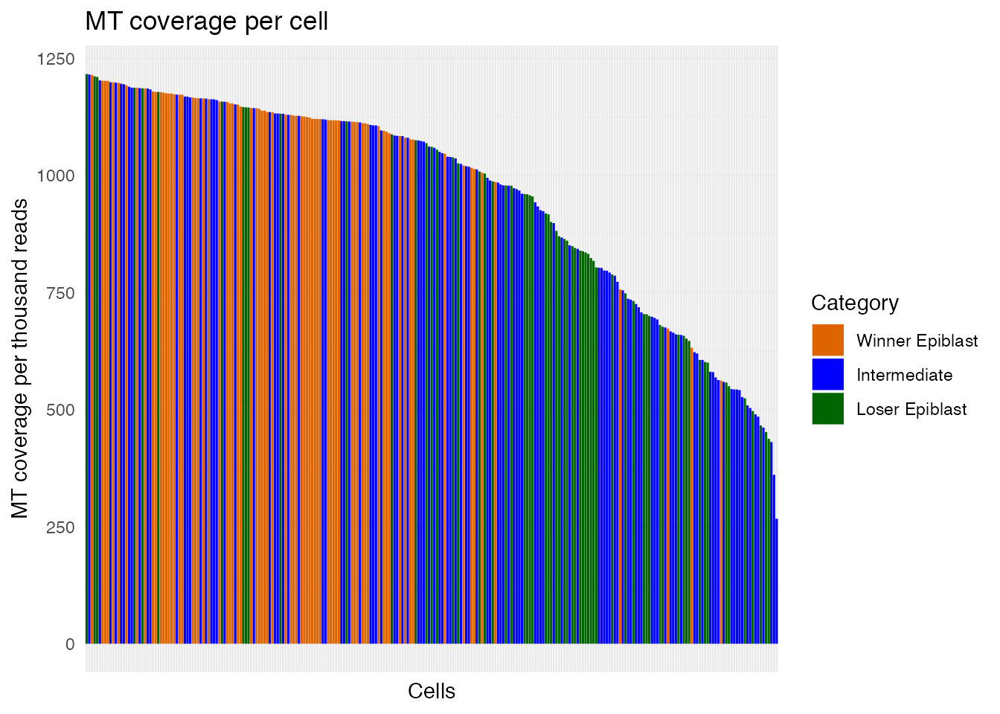
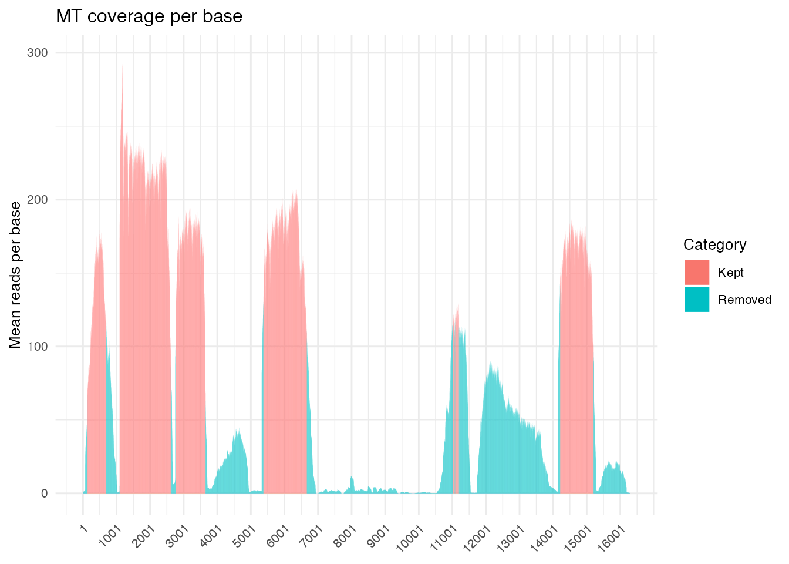
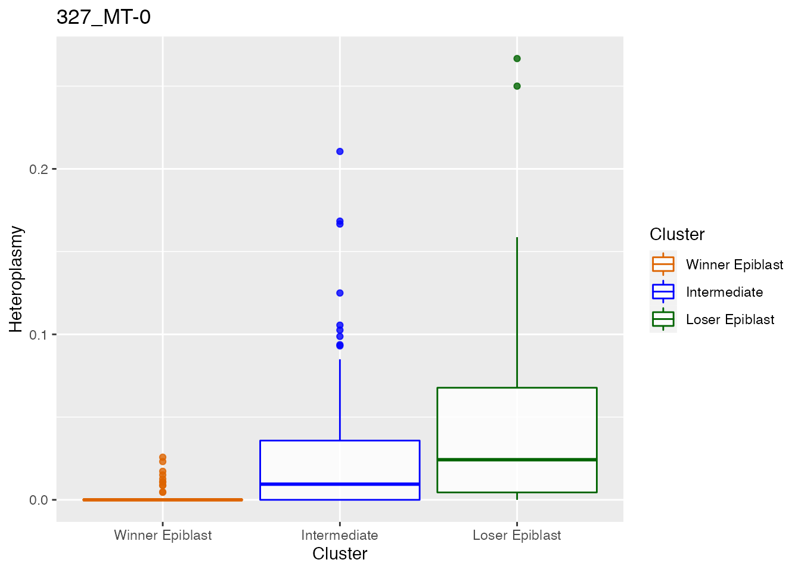
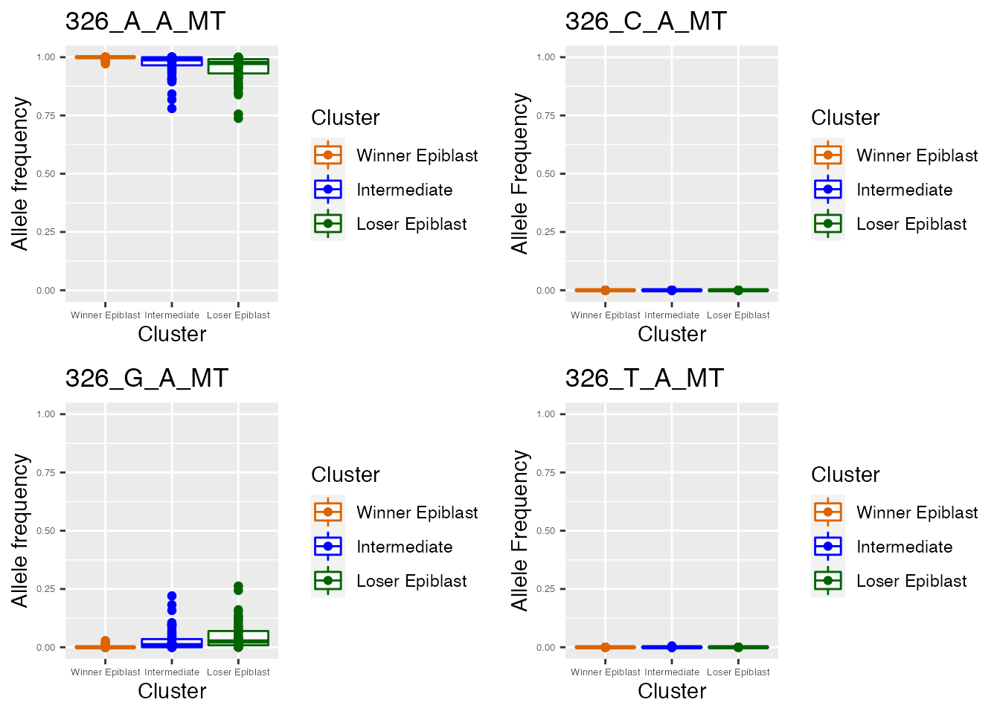
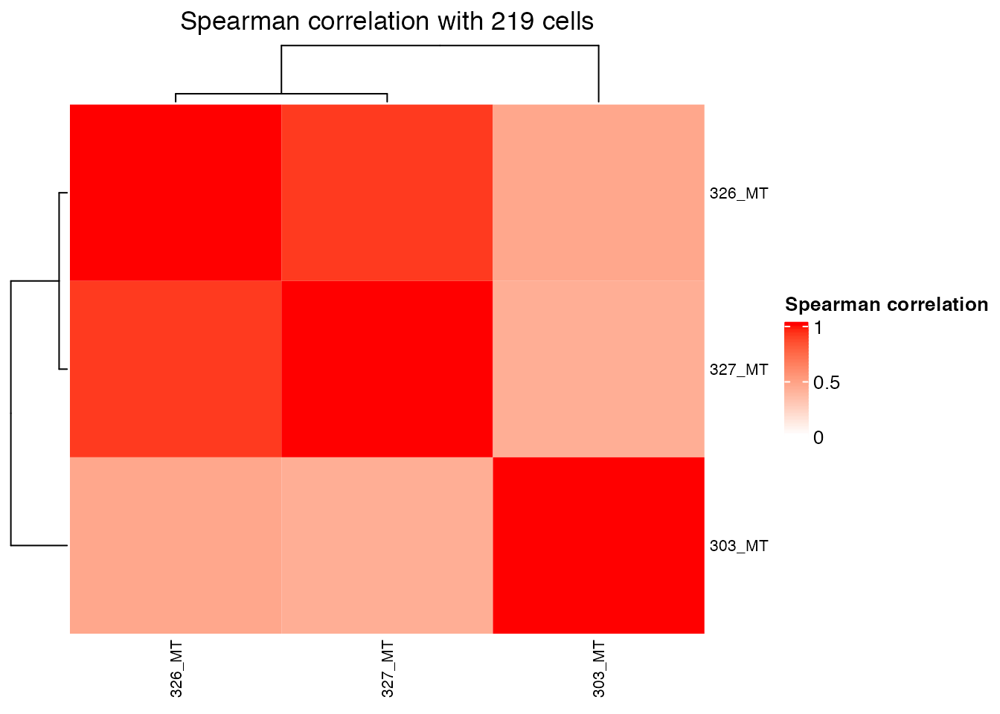
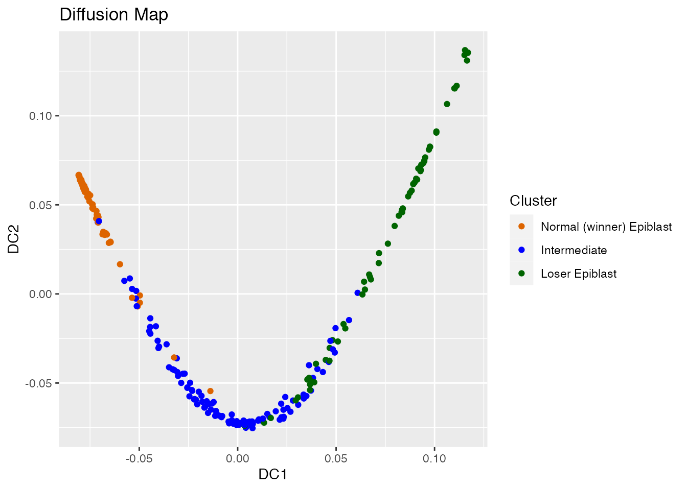
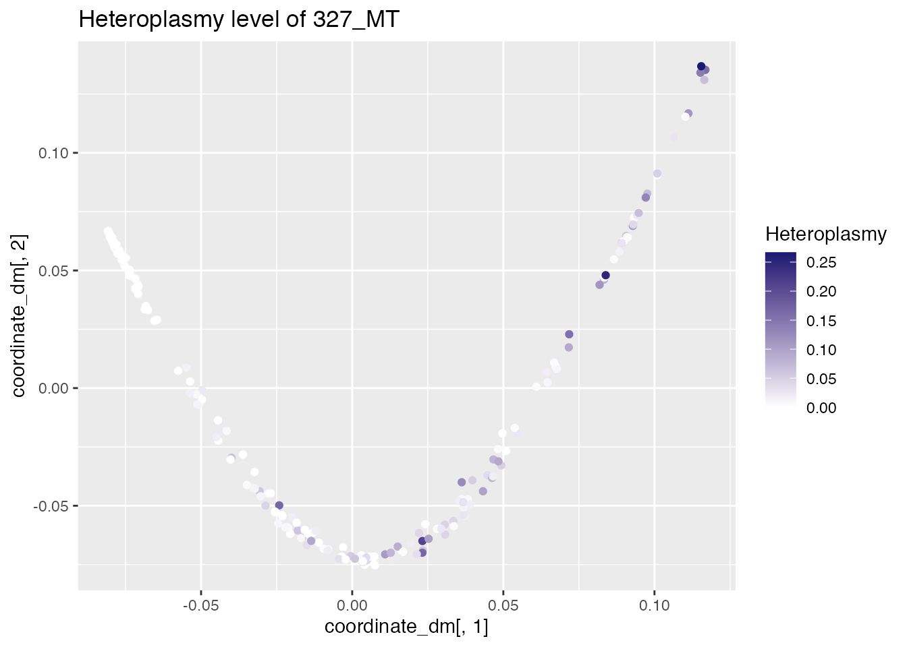
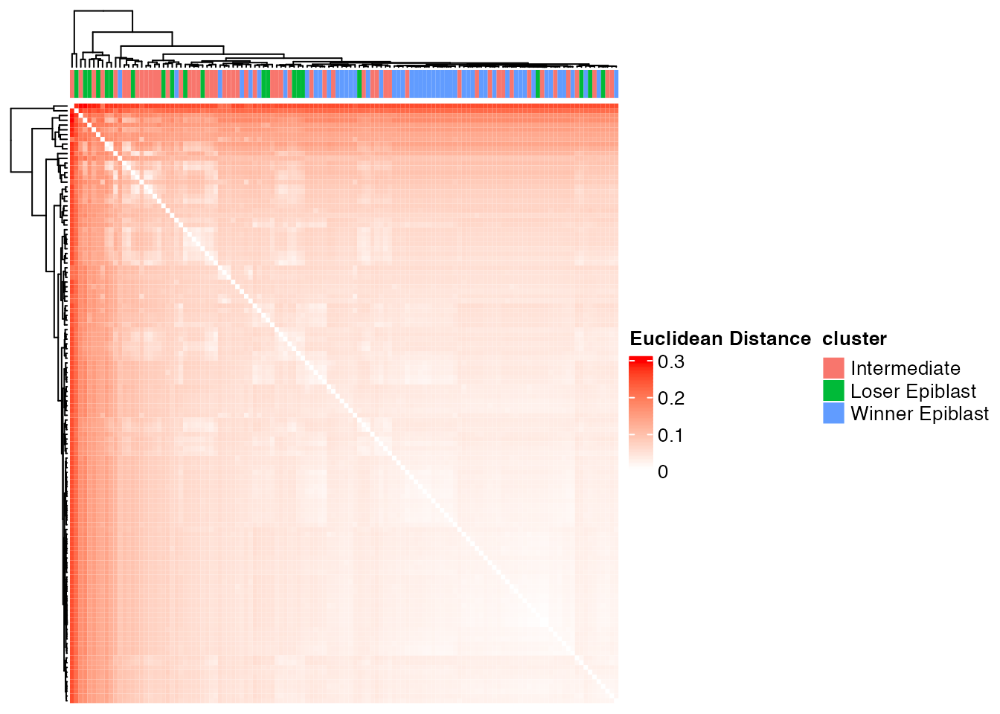
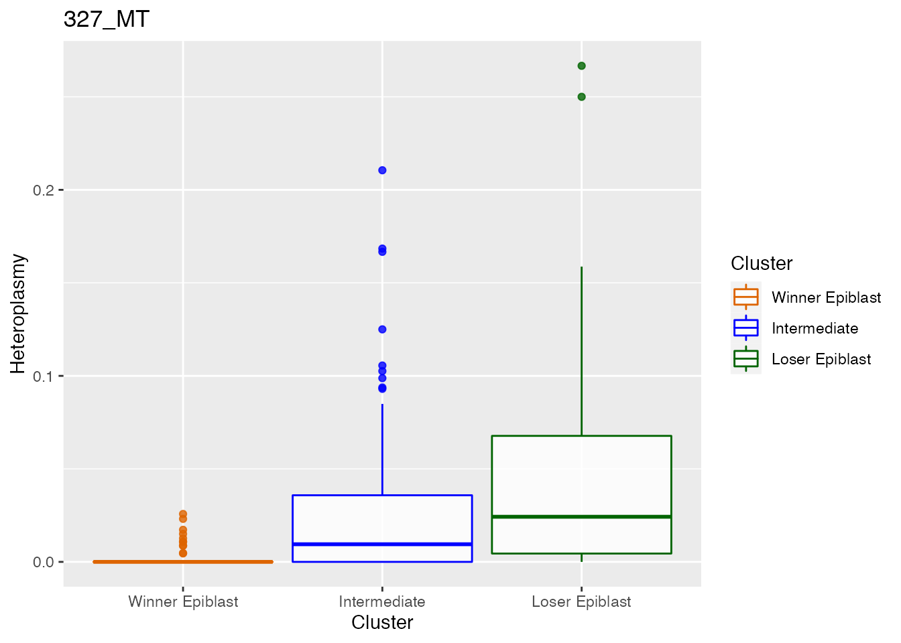
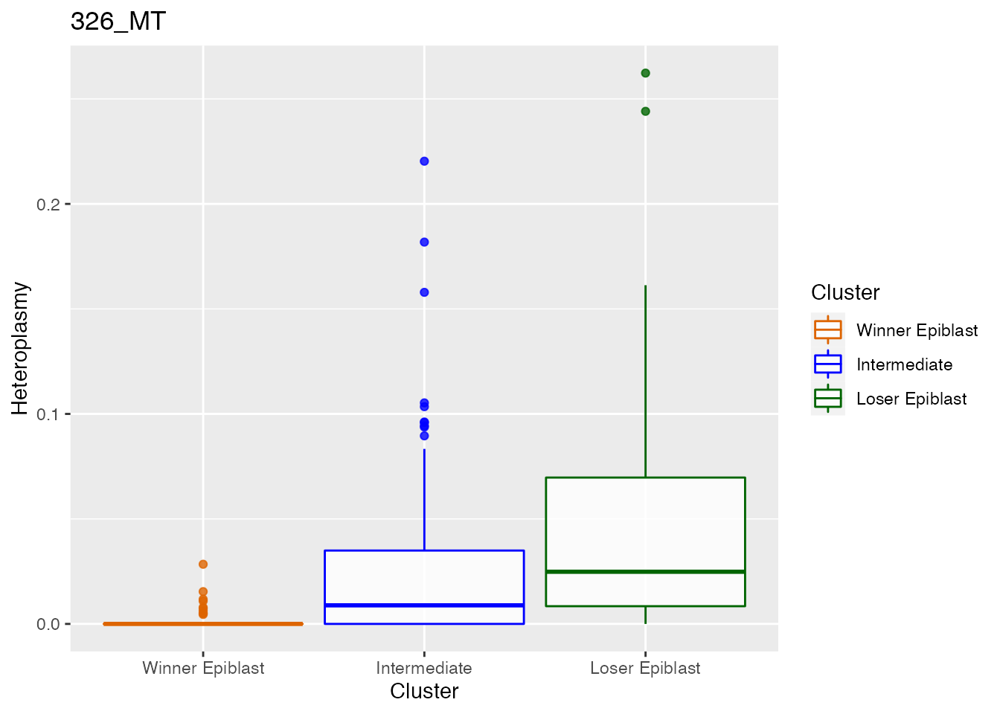

cell_competition_mt_example_notebook
Source:vignettes/cell_competition_mt_example_notebook.Rmd
cell_competition_mt_example_notebook.RmdThe notebook depends on karyoploteR, regioneR, gam and fmsb packages
library(MitoHEAR)
required <- c("karyoploteR", "regioneR", "gam", "fmsb")
if (!all(unlist(lapply(required, function(pkg) requireNamespace(pkg, quietly = TRUE)))))
knitr::opts_chunk$set(eval = FALSE)In this notebook it is shown the heteroplasmy analysis performed on mouse CI-treated epiblast cells from Lima et al, 2021.
Get counts for the four alleles in each base-cell pair
The first step of the library MitoHEAR is to generate a raw counts allele matrix with cells as rows and the four alleles for each base in the fasta file on the columns. This task is achieved with the function get_raw_counts_allele. As input we need to provide the sorted bam files (one for each cell, with full path), the fasta file of the genomic region of interested and the cell names. The matrix after_qc contains meta data information about the cells (i.e. cell names, cell types, batch).
load(system.file("extdata", "after_qc.Rda", package = "MitoHEAR"))
cell_names <- as.vector(after_qc$new_name)We don’t execute the function get_raw_counts_allele here and we directly load his output. A command line implementation of the function get_raw_counts_allele is also available (see github README file for info).
load(system.file("extdata", "output_SNP_mt.Rda", package = "MitoHEAR"))The output of get_raw_counts_allele is a list with three elements (see ?get_raw_counts_allele for more info). The first element is the matrix of counts (n_rows = number of cells, n_cols= 4*number of bases) of the four alleles in each base. The row names are equal to cell_names.
matrix_allele_counts <- output_SNP_mt[[1]]
name_position_allele <- output_SNP_mt[[2]]
name_position <- output_SNP_mt[[3]]We select only the CI-treated epiblast cells for the down-stream analysis.
row.names(after_qc) <- after_qc$new_name
cells_fmk_epi <- after_qc[(after_qc$condition == "Cell competition OFF")&(after_qc$cluster == 1|after_qc$cluster == 3|after_qc$cluster == 4), "new_name"]
after_qc_fmk_epi <- after_qc[cells_fmk_epi, ]
my.clusters <- after_qc_fmk_epi$clusterThe next step is to obtain a matrix with allele frequencies and a matrix with heteroplasmy values for each pair of cell-base. This is obtained with the function get_heteroplasmy. This function performs a two step filtering procedure, the first on the cells and the second on the bases. The aim is to keep only the cells that have more than number_reads counts in more than number_positions bases and to keep only the bases that are covered by more than number_reads counts in all the cells (filtering=1) or in at least 50% of cells in each cluster (filtering=2).
epiblast_ci <- get_heteroplasmy(matrix_allele_counts[cells_fmk_epi, ], name_position_allele, name_position, number_reads = 50, number_positions = 2000, filtering = 2, my.clusters)Among the output of get_heteroplasmy there are the matrix with heteroplasmy values and the matrix with allele frequencies, for all the cells and bases that pass the two step filtering procedure. The heteroplasmy is computed as 1-max(f), where f are the frequencies of the four alleles for every cell-base pair. For more info about the output see ?get_heteroplasmy.
sum_matrix <- epiblast_ci[[1]]
sum_matrix_qc <- epiblast_ci[[2]]
heteroplasmy_matrix_ci <- epiblast_ci[[3]]
allele_matrix_ci <- epiblast_ci[[4]]
cluster_ci <- as.character(after_qc[row.names(heteroplasmy_matrix_ci), ]$cluster)
cluster_ci[cluster_ci == "1"] <- "Winner Epiblast"
cluster_ci[cluster_ci == "3"] <- "Intermediate"
cluster_ci[cluster_ci == "4"] <- "Loser Epiblast"
condition_ci <- as.character(after_qc[row.names(heteroplasmy_matrix_ci), ]$condition)
index_ci <- epiblast_ci[[5]]Below the customized function plot_cells_coverage_epiblast is used in order to keep the same colour assignment and notation used in Lima et al, 2021. For general use, please use function plot_cells_coverage.
MitoHEAR:::plot_cells_coverage_epiblast(sum_matrix_qc, row.names(sum_matrix_qc), cluster_ci, interactive=FALSE)
#> [[1]]
plot_base_coverage(sum_matrix, sum_matrix_qc, row.names(sum_matrix_qc), interactive = FALSE, text_size = 10)
#> [[1]]
We can visualize the mitochondrial genome showing in red the positions that passed our filtering based on coverage and were considered for the heteroplasmy analysis. The plot is based on the R package karyoploteR.
chr_name <- "MT"
heteroplasmy_matrix <- heteroplasmy_matrix_ci
biomart_file <- system.file("extdata", "mt_start_end.txt", package = "MitoHEAR")
biomart_file <- read.table(biomart_file, sep = "\t", header = T)
fastaFile <- system.file("extdata", "Mus_musculus.GRCm38.dna.chromosome.MT.fa", package = "MitoHEAR")
fastaFile <- Biostrings::readDNAStringSet(fastaFile)
plot_genome_coverage(biomart_file, fastaFile, chr_name, heteroplasmy_matrix)
name_position_allele_qc <- name_position_allele[name_position %in% colnames(sum_matrix_qc)]
name_position_qc <- name_position[name_position %in% colnames(sum_matrix_qc)]It is possible to perform an additional filtering step on the bases keeping only the ones with an heteroplasmy value above min_heteroplasmy in more than min_cells.
relevant_bases <- filter_bases(heteroplasmy_matrix_ci, min_heteroplasmy = 0.01, min_cells = 10, index_ci)We can compute and visualize the distribution of the average coverage of the bases.
Identification of most different bases according to heteroplasmy between clusters
For detecting the difference in heteroplasmy values between two group of cells (i.e. two clusters), an unpaired two-samples Wilcoxon test is performed. In this case we run the test between the clusters Winner Epiblast and Loser Epiblast. As output, for each base, there is the adjusted p valued (FDR).
p_value_wilcox_test <- get_wilcox_test(heteroplasmy_matrix_ci[, relevant_bases], cluster_ci, "Winner Epiblast", "Loser Epiblast" , index_ci)We sort the bases according to the adjusted p value in order to identify the bases where the heteroplasmy is most different between the two clusters.
p_value_wilcox_test_sort <- sort(p_value_wilcox_test, decreasing = F)The heteroplasmy and the corresponding allele frequencies for the most relevant bases (according to Wilcoxon test) are shown. We can notice that the top 10 relevant bases belong to the genes mt-Rnr1 and mt-Rnr1 and in these positions the heteroplasmy is always higher in the Loser Epiblast. Below the customized functions plot_heteroplasmy_epiblast and plot_allele_frequency_epiblast are used in order to keep the same colour assignment and notation used in Lima et al, 2021. For general use, please use functions plot_heteroplasmy and plot_allele_frequency
q <- list()
for ( i in 1:length(p_value_wilcox_test_sort[1:2])) {
p <- MitoHEAR:::plot_heteroplasmy_epiblast(names(p_value_wilcox_test_sort)[i], heteroplasmy_matrix_ci, cluster_ci, index_ci)+ggplot2::ggtitle(paste(names(p_value_wilcox_test_sort)[i], round(p_value_wilcox_test_sort[i], 4), sep = "-"))
q <- list(q, p)
}
q
#> [[1]]
#> [[1]][[1]]
#> list()
#>
#> [[1]][[2]]#>
#>
#> [[2]]
q <- list()
for ( i in names(p_value_wilcox_test_sort)[1:2]) {
p <- MitoHEAR:::plot_allele_frequency_epiblast(i, heteroplasmy_matrix_ci, allele_matrix_ci, cluster_ci, name_position_qc, name_position_allele_qc, 5, index_ci)
q <- list(q, p)
}
q
#> [[1]]
#> [[1]][[1]]
#> list()
#>
#> [[1]][[2]]
#> TableGrob (2 x 2) "arrange": 4 grobs
#> z cells name grob
#> 1 1 (1-1,1-1) arrange gtable[layout]
#> 2 2 (1-1,2-2) arrange gtable[layout]
#> 3 3 (2-2,1-1) arrange gtable[layout]
#> 4 4 (2-2,2-2) arrange gtable[layout]
#>
#>
#> [[2]]
#> TableGrob (2 x 2) "arrange": 4 grobs
#> z cells name grob
#> 1 1 (1-1,1-1) arrange gtable[layout]
#> 2 2 (1-1,2-2) arrange gtable[layout]
#> 3 3 (2-2,1-1) arrange gtable[layout]
#> 4 4 (2-2,2-2) arrange gtable[layout]Identification of most different bases according to heteroplasmy along pseudo-time
If for each cell the diffusion pseudo-time information is also available, then it is possible to detect the bases whose heteroplasmy changes in a significant way along pseudo-time. To perform this task three different methods are available: GAM (the adjusted p value provided by the GAM fit is assigned to each base), pearson and spearman (the adjusted p value provided by the pearson or spearman correlation test between heteroplasmy and diffusion pseudo-time is assigned to each base). For more info see ?dpt_test
time <- after_qc[row.names(heteroplasmy_matrix_ci), ]$pseudo_time
dpt_analysis <- dpt_test(heteroplasmy_matrix_ci[, relevant_bases], time, index_ci, method = "GAM")
dpt_analysis_result_final <- dpt_analysis[dpt_analysis$FDR_value<0.001, ]The heteroplasmy level for the top 2 relevant bases (according to GAM fit) is shown along pseudo time, with the black line denoting the GAM fit. We can notice that the top bases belong to the genes mt-Rnr1 and mt-Rnr2 and in these positions the heteroplasmy increases with the diffusion pseudo time. The top 10 positions identified with the diffusion pseudo time analysis are equal to the top 10 positions detected with the Wilcoxon test based on clustering partition. Below the customized function plot_dpt_epiblast is used in order to keep the same colour assignment and notation used in Lima et al, 2021. For general use, please use function plot_dpt.
Plotting options for top bases according to heteroplasmy
bases_example <- c("326_MT","327_MT","303_MT")
plot_correlation_bases(bases_example, index_ci, heteroplasmy_matrix_ci)
plot_spider_chart(colnames(sum_matrix_qc)[1], cluster_ci, heteroplasmy_matrix_ci, index_ci)
plot_spider_chart("326_MT", cluster_ci, heteroplasmy_matrix_ci, index_ci)
plot_spider_chart("327_MT", cluster_ci, heteroplasmy_matrix_ci, index_ci)
plot_spider_chart("303_MT", cluster_ci, heteroplasmy_matrix_ci, index_ci)
load(system.file("extdata", "coordinate_dm.Rda", package = "MitoHEAR"))
cluster <- after_qc[row.names(heteroplasmy_matrix_ci), ]$cluster
coordinate_dm <- coordinate_dm[row.names(heteroplasmy_matrix_ci), ]
MitoHEAR:::plot_coordinate_cluster_epiblast(coordinate_dm , cluster)
plot_coordinate_heteroplasmy(coordinate_dm, heteroplasmy_matrix_ci, index_ci, "327_MT")
We can check if there is a batch effect in the most relevant positions (i.e. the heteroplasmy levels are constantly higher only in a specific batch). For the top 2 positions defined with the GAM fit there is not a batch effect, since the heteroplasmy levels are higher among all cells in the Loser Epiblast clusters and not only in a specific batch. Below the customized function plot_batch_epiblast is used in order to keep the same colour assignment and notation used in Lima et al, 2021. For general use please use function plot_batch.
after_qc_qc <- after_qc[row.names(heteroplasmy_matrix_ci),]
batch <- rep(0,length(after_qc_qc$cluster))
batch[after_qc_qc$cluster == 1&after_qc_qc$batch == "1"] <- "a)Win 1"
batch[after_qc_qc$cluster == 1&after_qc_qc$batch == "5"] <- "a)Win 5"
batch[after_qc_qc$cluster == 1&after_qc_qc$batch == "4"] <- "a)Win 4"
batch[after_qc_qc$cluster == 1&after_qc_qc$batch == "2"] <- "a)Win 2"
batch[after_qc_qc$cluster == 1&after_qc_qc$batch == "3"] <- "a)Win 3"
batch[after_qc_qc$cluster == 3&after_qc_qc$batch == "1"] <- "b)Int 1"
batch[after_qc_qc$cluster == 3&after_qc_qc$batch == "5"] <- "b)Int 5"
batch[after_qc_qc$cluster == 3&after_qc_qc$batch == "4"] <- "b)Int 4"
batch[after_qc_qc$cluster == 3&after_qc_qc$batch == "2"] <- "b)Int 2"
batch[after_qc_qc$cluster == 3&after_qc_qc$batch == "3"] <- "b)Int 3"
batch[after_qc_qc$cluster == 4&after_qc_qc$batch == "1"] <- "c)Los 1"
batch[after_qc_qc$cluster == 4&after_qc_qc$batch == "5"] <- "c)Los 5"
batch[after_qc_qc$cluster == 4&after_qc_qc$batch == "4"] <- "c)Los 4"
batch[after_qc_qc$cluster == 4&after_qc_qc$batch == "2"] <- "c)Los 2"
batch[after_qc_qc$cluster == 4&after_qc_qc$batch == "3"] <- "c)Los 3"
MitoHEAR:::plot_batch_epiblast(dpt_analysis$Position[1], heteroplasmy_matrix_ci, batch, cluster_ci, 6, index_ci)
MitoHEAR:::plot_batch_epiblast(dpt_analysis$Position[2], heteroplasmy_matrix_ci, batch, cluster_ci, 6, index_ci)Unsupervised cluster analysis among cells based on allele frequency values
MitoHEAR offers the possibility to perform an unsupervised hierarchical clustering on the cells based on a distance matrix with the function clustering_dist_ang. Given a base, the distance between two cells is the angular distance of the allele frequencies. Given a base, the variance of the distance values between two cells is also computed. Top bases with highest variance are selected for down stream analysis. We can represent the difference between two cells as a vector whose coordinates are the angular distances of the top bases. The total distance between two cell is the euclidean norm of the vector of difference between the two cells. The output of clustering_dist_ang is a list. The first element is a data frame which contains the old classification (partition available before the cluster analysis based on allele frequencies) and the new classification (partition provided by the cluster analysis based on allele frequencies ). The second element is the distance matrix, on which the hierarchical clustering is done. The third element is a vector with the top bases according to variance.
It is also possible to run clustering_dist_ang in a supervised approach. In this case the bases used for hierarchical clustering are not selected according to variance, but are directly provided with the parameter relevant_bases. The heatmap of the distance matrix with cells sorted according to the new classification is shown below. The cluster analysis based on allele frequencies information can be a powerful way to perform a lineage tracing analysis, by grouping together cells which are from the same embryo. See ?clustering_dist_ang for more info.
result_clustering_sc <- clustering_angular_distance(heteroplasmy_matrix_ci, allele_matrix_ci, cluster_ci, length(row.names(heteroplasmy_matrix_ci)), deepSplit_param = 0, minClusterSize_param = 50, 0.2, min_value = 0.001, index = index_ci, relevant_bases = NULL)
#> ..cutHeight not given, setting it to 0.289 ===> 99% of the (truncated) height range in dendro.
#> ..done.
old_new_classification <- result_clustering_sc[[1]]
dist_matrix_sc <- result_clustering_sc[[2]]
top_dist <- result_clustering_sc[[3]]
common_idx <- result_clustering_sc[[4]]
old_classification <- as.vector(old_new_classification[, 1])
new_classification <- as.vector(old_new_classification[, 2])
plot_distance_matrix(dist_matrix_sc, old_classification)
Below the top 2 bases selected for the unsupervised cluster analysis. Consistently these are the same top 2 bases according to GAM fit.
q <- list()
for ( i in 1:length(top_dist[1:2])) {
p <- MitoHEAR:::plot_heteroplasmy_epiblast(top_dist[i], heteroplasmy_matrix_ci, cluster_ci, index_ci)
q <- list(q, p)
}
q
#> [[1]]
#> [[1]][[1]]
#> list()
#>
#> [[1]][[2]]
#>
#>
#> [[2]]
utils::sessionInfo()
#> R version 4.0.2 (2020-06-22)
#> Platform: x86_64-apple-darwin17.0 (64-bit)
#> Running under: macOS Mojave 10.14.6
#>
#> Matrix products: default
#> BLAS: /Library/Frameworks/R.framework/Versions/4.0/Resources/lib/libRblas.dylib
#> LAPACK: /Library/Frameworks/R.framework/Versions/4.0/Resources/lib/libRlapack.dylib
#>
#> locale:
#> [1] en_US.UTF-8/en_US.UTF-8/en_US.UTF-8/C/en_US.UTF-8/en_US.UTF-8
#>
#> attached base packages:
#> [1] stats graphics grDevices utils datasets methods base
#>
#> other attached packages:
#> [1] MitoHEAR_0.1.0
#>
#> loaded via a namespace (and not attached):
#> [1] backports_1.4.1 circlize_0.4.13
#> [3] Hmisc_4.6-0 BiocFileCache_1.14.0
#> [5] systemfonts_1.0.4 lazyeval_0.2.2
#> [7] splines_4.0.2 BiocParallel_1.24.1
#> [9] GenomeInfoDb_1.26.7 ggplot2_3.3.5
#> [11] digest_0.6.29 foreach_1.5.1
#> [13] ensembldb_2.14.1 htmltools_0.5.2
#> [15] magick_2.7.3 fansi_0.5.0
#> [17] magrittr_2.0.1 checkmate_2.0.0
#> [19] memoise_2.0.1 BSgenome_1.58.0
#> [21] cluster_2.1.0 ComplexHeatmap_2.6.2
#> [23] Biostrings_2.58.0 rdist_0.0.5
#> [25] matrixStats_0.61.0 askpass_1.1
#> [27] pkgdown_2.0.2 prettyunits_1.1.1
#> [29] jpeg_0.1-9 colorspace_2.0-2
#> [31] blob_1.2.2 rappdirs_0.3.3
#> [33] textshaping_0.3.6 xfun_0.29
#> [35] dplyr_1.0.7 crayon_1.4.2
#> [37] RCurl_1.98-1.5 jsonlite_1.7.2
#> [39] survival_3.2-3 VariantAnnotation_1.36.0
#> [41] iterators_1.0.13 glue_1.6.0
#> [43] gtable_0.3.0 zlibbioc_1.36.0
#> [45] XVector_0.30.0 GetoptLong_1.0.5
#> [47] DelayedArray_0.16.3 shape_1.4.6
#> [49] BiocGenerics_0.36.1 scales_1.1.1
#> [51] bezier_1.1.2 DBI_1.1.2
#> [53] Rcpp_1.0.7 fmsb_0.7.2
#> [55] progress_1.2.2 htmlTable_2.4.0
#> [57] clue_0.3-60 foreign_0.8-80
#> [59] bit_4.0.4 Formula_1.2-4
#> [61] stats4_4.0.2 karyoploteR_1.16.0
#> [63] htmlwidgets_1.5.4 httr_1.4.2
#> [65] RColorBrewer_1.1-2 ellipsis_0.3.2
#> [67] pkgconfig_2.0.3 XML_3.99-0.8
#> [69] farver_2.1.0 nnet_7.3-14
#> [71] sass_0.4.0 dbplyr_2.1.1
#> [73] dynamicTreeCut_1.63-1 utf8_1.2.2
#> [75] tidyselect_1.1.1 labeling_0.4.2
#> [77] rlang_0.4.12 AnnotationDbi_1.52.0
#> [79] munsell_0.5.0 tools_4.0.2
#> [81] cachem_1.0.6 generics_0.1.1
#> [83] RSQLite_2.2.9 evaluate_0.14
#> [85] stringr_1.4.0 fastmap_1.1.0
#> [87] yaml_2.2.1 ragg_1.2.2
#> [89] knitr_1.37 bit64_4.0.5
#> [91] fs_1.5.2 purrr_0.3.4
#> [93] AnnotationFilter_1.14.0 gam_1.20
#> [95] xml2_1.3.3 biomaRt_2.46.3
#> [97] compiler_4.0.2 rstudioapi_0.13
#> [99] curl_4.3.2 png_0.1-7
#> [101] tibble_3.1.6 bslib_0.3.1
#> [103] stringi_1.7.6 highr_0.9
#> [105] GenomicFeatures_1.42.3 desc_1.2.0
#> [107] lattice_0.20-41 ProtGenerics_1.22.0
#> [109] Matrix_1.3-4 vctrs_0.3.8
#> [111] pillar_1.6.4 lifecycle_1.0.1
#> [113] jquerylib_0.1.4 GlobalOptions_0.1.2
#> [115] data.table_1.14.2 bitops_1.0-7
#> [117] rtracklayer_1.50.0 GenomicRanges_1.42.0
#> [119] R6_2.5.1 latticeExtra_0.6-29
#> [121] gridExtra_2.3 IRanges_2.24.1
#> [123] codetools_0.2-16 dichromat_2.0-0
#> [125] assertthat_0.2.1 SummarizedExperiment_1.20.0
#> [127] openssl_1.4.6 rprojroot_2.0.2
#> [129] rjson_0.2.20 regioneR_1.22.0
#> [131] GenomicAlignments_1.26.0 Rsamtools_2.6.0
#> [133] S4Vectors_0.28.1 GenomeInfoDbData_1.2.4
#> [135] parallel_4.0.2 hms_1.1.1
#> [137] grid_4.0.2 rpart_4.1-15
#> [139] bamsignals_1.22.0 rmarkdown_2.11
#> [141] MatrixGenerics_1.2.1 Cairo_1.5-12.2
#> [143] biovizBase_1.38.0 Biobase_2.50.0
#> [145] base64enc_0.1-3